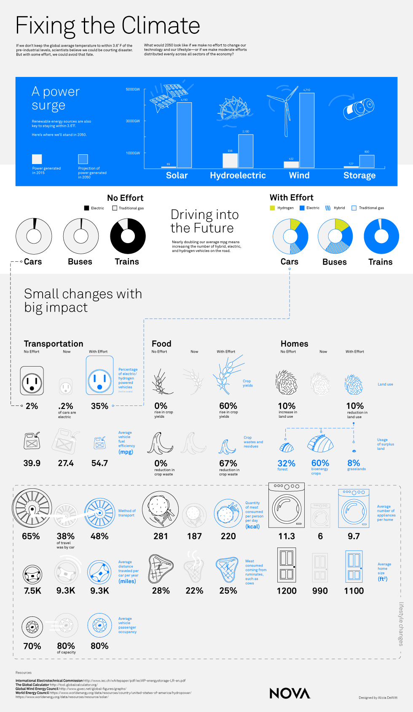

PBS Nova Next
"Fixing the Climate" Infographic
Digital, various sizes
NOVA knew that they wanted an infographic to accompany an online piece about the impact that self driving cars would have on the climate. Their idea was to quantify how we could reduce global emissions, but there wasn’t much more than that at first.
I started by organizing the list of facts that they were hoping to include. Two major categories of information emerged: large trends in renewable energy, and smaller factors that might feel like more tangible changes to someone’s lifestyle.
I iterated back and forth with NOVA over emails and phone calls. Ultimately, the story became about showing that climate change isn’t a lost cause — there really are small changes that will help. We decided to open with more abstract representations of the big numbers, and then show the small changes with familiar iconography. I knew I was on to something when my editor opened a check-in with “you definitely got your Tufte on.”
